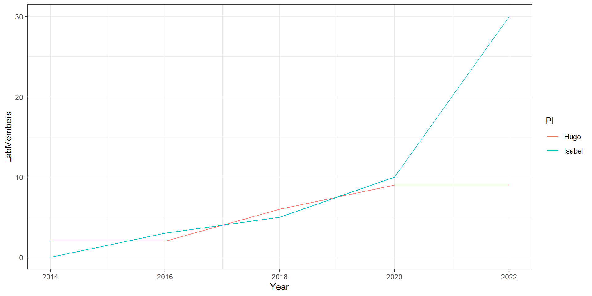

R class - packages and functions
2023-09-01
ggplot2
Create a colored boxplot with the dataset iris, with nice axes titles
Code from the previous class

Use ggplot. The syntax may take a while to get used to, but it is easier to read.
# aes is short for aesthetics, basically what columns hold the values you want to plot
# fill is the color that will be inside the box, color is just for the border
ggplot(data = iris,
aes(x = Species,
y = Sepal.Length,
fill = Species)) +
geom_boxplot() + # the type of plot you want
ylab("Sepal length (mm)") +
xlab("Species epithet")Improve ggplot by setting a better theme (check here see the options)
# Set a theme for all future plots in this session
theme_set(theme_bw())
# Use different colors to fill and remove the legend
colors = c("red", "green", "blue")
ggplot(data = iris,
aes(x = Species,
y = Sepal.Length,
fill = Species)) +
geom_boxplot(show.legend = F) + # the type of plot you want
ylab("Sepal length (mm)") +
xlab("Species epithet") +
scale_fill_manual(values = colors)
ggplot - part 2
Graphics are layers of data and images put on top of each other. That is why the pieces of the ggplot function are connected by a +.
The codes below construct the plot from the previous slide piece by piece.
labs adds labels:
xandy- will add the labels to the axes (you can use the functionsxlaborylabinstead)title- Normally at the top of the figure (you can use the functionggtitleinstead)subtitle- Goes under the title and is a bit smallercaption- Normally goes at the bottom of the figure and is a small texttag- the letter that goes at the top-left corner of a plot that is one part of several in a figure

Types of plots - Bar chart
- Uses
- Visually compare means when the number of replicates is low
- Visually compare counts (number of occurences) - number of students per lab
- How
- Use either
geom_colorgeom_bar(stat = "identity") - Add standard deviation bar with geom_errorbar
geom_errorbar(aes(ymin=Mean-sd, ymax=Mean+sd), width=.2)
- Use either

- identity means that the size of the bar will be the value you put instead of calculating something
- Using either geom_bar or geom_col, you can make a pie chart with
+ coord_polar("y")
df <- data.frame(
group = c("Male", "Female", "Child"),
value = c(25, 25, 50)
)
# Barplot like geom_col
ggplot(df, aes(x = "", y = value, fill = group)) +
# x has to be "" - check how it looks if you put x = group
geom_bar(width = 1, stat = "identity") +
coord_polar("y", start = 1) +
theme_void() # clean up grids, borders, and labelsTypes of plots - part 3
Line graph - geom_line
- Visualize data across time - points are connected because they are the same sample at different times.
Let’s say we want to see how the labs of 2 PIs have grown across the years and compare the two.
# Let's create a time series to plot
LabSize = data.frame(Isabel = c(0, 3, 5, 10, 30),
Hugo = c(2, 2, 6, 9, 9),
Year = seq(2014, 2022, 2))
LabSize.Long = pivot_longer(LabSize,
cols = !Year, # all columns from LabSize, except "Year"
names_to = "PI",
values_to = "LabMembers")
ggplot(LabSize.Long,
aes(x = Year, y = LabMembers, color = PI)) +
geom_line()
We will use the time series data
# Load the data
timeSeries = read.csv("karengoncalves.github.io/ProgrammingClasses/r/exampleData/TimeSeries_example.csv", row.names = 1)'data.frame': 12 obs. of 1 variable:
$ X.Control_3.Control_2.Control_1.TreatmentA_1.TreatmentA_2.TreatmentA_3.TreatmentB_3.TreatmentB_2.TreatmentB_1: chr "1,1,1,1,1,1,1,1,Day_1,0,0,0,0,0,0,0,0,0" "2,2,2,2,2,2,2,2,Day_2,1.96,2.04,2,2.94,3,3.06,1.53,1.47,1.5" "3,3,3,3,3,3,3,3,Day_3,3.98,4.02,4,6.03,6,5.97,3,2.985,3.015" "4,4,4,4,4,4,4,4,Day_4,6.18,6,5.82,8.73,9.27,9,4.5,4.365,4.635" ...Let’s transform the data to format long and add a column with the name of the treatment group
timeSeriesLong = pivot_longer(
timeSeries,
cols = !TimePoint,
names_to = "Replicates",
values_to = "Growth_measure"
) %>% mutate(Treatment = str_split_i(Replicates, pattern = "_", i = 1))
head(timeSeriesLong) # A tibble: 6 × 4
TimePoint Replicates Growth_measure Treatment
<chr> <chr> <chr> <chr>
1 T1 X.Control_3.Control_2.Control_1.TreatmentA… 1,1,1,1,1,1,1… X.Control
2 T2 X.Control_3.Control_2.Control_1.TreatmentA… 2,2,2,2,2,2,2… X.Control
3 T3 X.Control_3.Control_2.Control_1.TreatmentA… 3,3,3,3,3,3,3… X.Control
4 T4 X.Control_3.Control_2.Control_1.TreatmentA… 4,4,4,4,4,4,4… X.Control
5 T5 X.Control_3.Control_2.Control_1.TreatmentA… 5,5,5,5,5,5,5… X.Control
6 T6 X.Control_3.Control_2.Control_1.TreatmentA… 6,6,6,6,6,6,6… X.ControlNow let’s create another table with the mean, standard deviation and coefficient of variation of each treatment per time point

For the error bars, we cannot simply say “here, this is the standard deviation”.
We need to tell it “use this value as maximum and this as minimum”
See that we set “ymin” and “ymax”. If you have standard deviation for the x-axis, you can add it with “xmin” and “xmax”.
# We put inside ggplot() what is common to all layers
ggplot(GrowthMeasureStats, aes(
x = TimePoint,
group = Treatment, # this is important, repeat this code without this line to see why
color = Treatment)) +
geom_line(aes(y = Mean)) +
geom_errorbar(aes(ymin = Mean - StdEnv,
ymax = Mean + StdEnv),
width = 0.2)